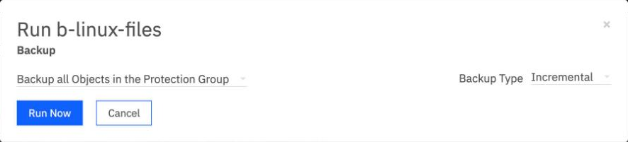
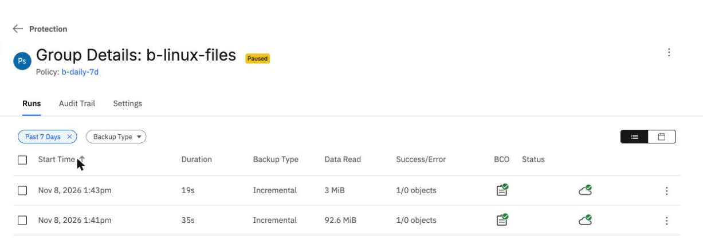
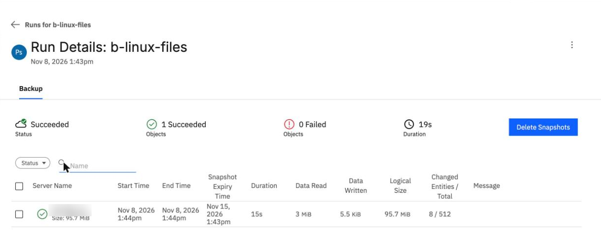

Full and incremental backups of files
By the end of this unit you'll know what a full and an incremental backup read, how much an incremental reads after a small change, and where to find a run's numbers in the BRS console.
Northgate Freight is a made-up haulier. It protects the folder /data on a Linux server with a daily policy that keeps backups for 7 days. In this unit it runs its first two backups by hand.
Every number and screen in this unit comes from real runs in our lab. The server name is blurred in the screenshots.
What each kind of backup reads
A protection group backs up its objects on the policy's schedule, or when you click Run Now. Northgate's group is file-based: it backs up the files under /data, which held 506 files, 97.1 MB.
The group has never run. Northgate clicks Run Now and leaves Backup Type at Incremental. What does the run read?
Show the answer
Every file. The first run read all 506 files, 97.1 MB, in 34 seconds. The Run Now dialog starts at Incremental, and the other choice is Full. You don't need to change it for a first run.
Why file-based and not volume-based for Northgate's folder?
Show the answer
A file-based incremental reads only what changed. That's what our lab runs showed. In the BRS console, Protect > Physical Server offers File-based and no volume-based type, so the choice is made for you there.
How much does the second run read?
After the first backup, Northgate adds six files to /data: five small text files and one 3 MB file. Then it runs the group again.
Run Files Read Time First 506 97.1 MB 34 s Second 512 ? ?
How much does the second run read?
Show the answer
3.2 MB against 97.1 MB.The second run read 3.2 MB (3 MiB). In an earlier run in our lab, the same change read 5.9 MB, and we didn't find out why. Either way, it's a small fraction of the full backup.
Run Files Read Time First 506 97.1 MB 34 s Second 512 3.2 MB 15 s
How long does the second run take, against 34 seconds for the first?
Show the answer
15 seconds for the server, in our lab. The run as a whole shows 19 seconds in the console. A small change doesn't make a backup instant.
Run the group and read the result
These screens come from the BRS console in our lab. Click where you'd click. After two misses, the right place is marked.

You opened Run Now from the group's menu. Where do you choose between a full and an incremental backup?
Show where
Right. Backup Type starts at Incremental, and the other choice is Full. For a group with no backup yet, leave it, because the first run is a full backup anyway. Open Run Now from the Protection list, because the group's own page has no Run Now while the group is paused.

Both runs are labelled Incremental. Click the figure that shows which one read every file.
Show where
Right. 92.6 MiB is the 97.1 MB of the full backup, in binary units. The console labels the first run Incremental too, so read Data Read, not Backup Type, to know which run was the full one.

You opened the second run. Where is the amount it read from the server?
Show where
Right. Data Read, 3 MiB. On the same row, Changed Entities says 8 of 512 changed, and Snapshot Expiry Time is 7 days after the backup, because the policy keeps each backup for 7 days.
A run that stays at 0 bytes read
On another day, Northgate's backup admin registers a new server through the Connector Agent and starts a backup straight away. The run stays Running, with 0 bytes read, for ten minutes.
10:44:03 source registered 10:44:50 run 1 starts (47 s later) 10:45:10 backup agent restarts 10:55:34 still Running, 0 bytes read
What went wrong?
Show the answer
The run started while the agent was about to restart. It started 47 seconds after the registration, and the backup agent restarted 20 seconds later. That run never read anything, and the next run worked. The connector server had been joined for a while before its first run, and its first run worked.
The admin cancels the stuck run from the command line, giving the run's ID. What happens?
Show the answer
It's refused. The CLI answered "Task Id must be specified for cancellation." With the archival task ID added, the cancel worked and the run showed Failed.
Watch for this. If a run stays Running and reads nothing, cancel it and run the group again. In our lab this happened once, to a run started 47 seconds after a Connector Agent registration, and the runs after it worked.
Three questions
A new file-based group runs for the first time with Backup Type Incremental. What does it read?
Show the answer
Every file. A group with no backup yet takes a full backup, whatever Backup Type says.
Two runs in the console both say Incremental. How do you tell which was the full backup?
Show the answer
By Data Read. The console labels the first run Incremental too, so 92.6 MiB against 3 MiB is what tells them apart.
A backup runs under a policy that keeps backups for 7 days. When does its snapshot expire?
Show the answer
7 days after the run. The Run Details page shows Snapshot Expiry Time 7 days after the run.
You can read what a backup did
The first run reads everything, and a file-based incremental reads little more than what changed: 3.2 MB against 97.1 MB in our lab. The console calls both runs Incremental, so read Data Read. If a run started right after a Connector Agent registration reads nothing, cancel it and run the group again.